10 poses com rosto limpo · 13 olhos e expressões · bigode independente. Mostruário montado para conferir o encaixe.
Projeto Filmora · Instruções
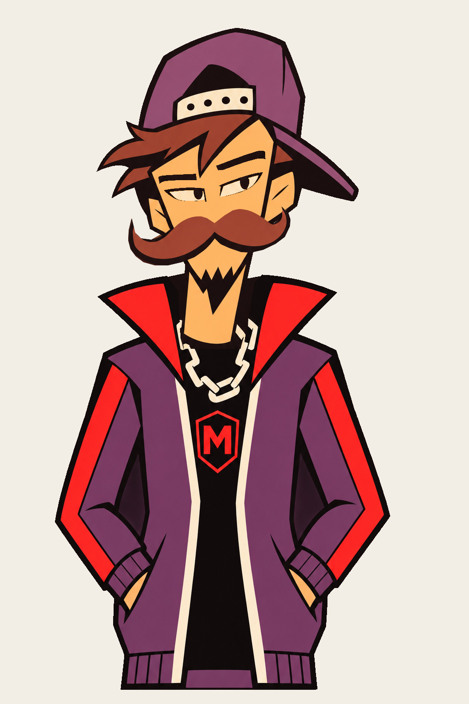
Neutro
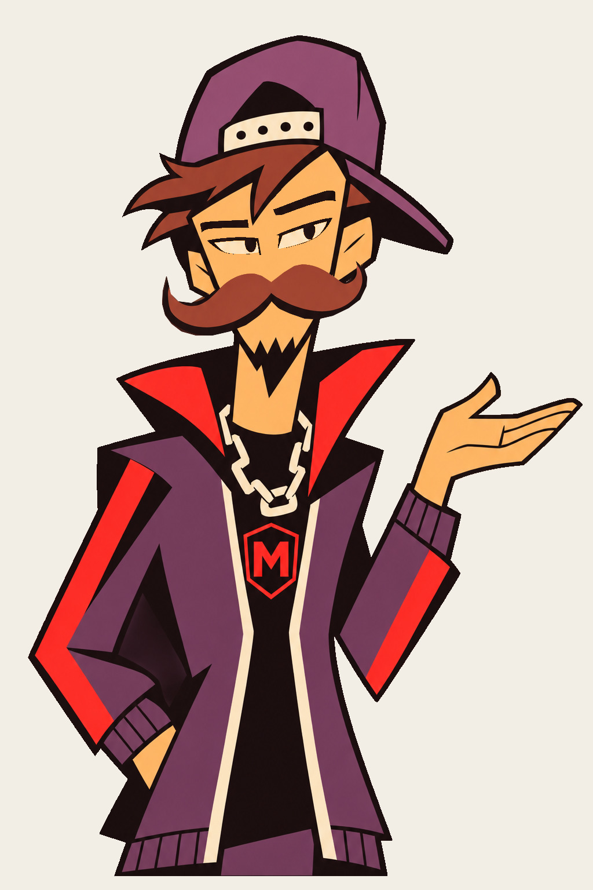
Conversando
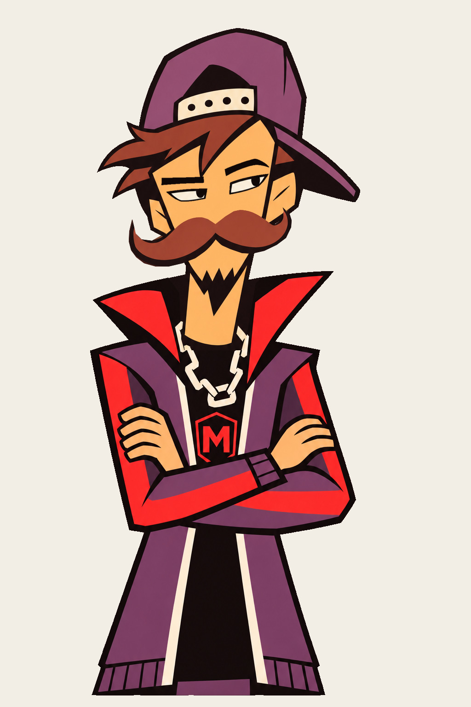
Braços cruzados
Apontando
Confuso
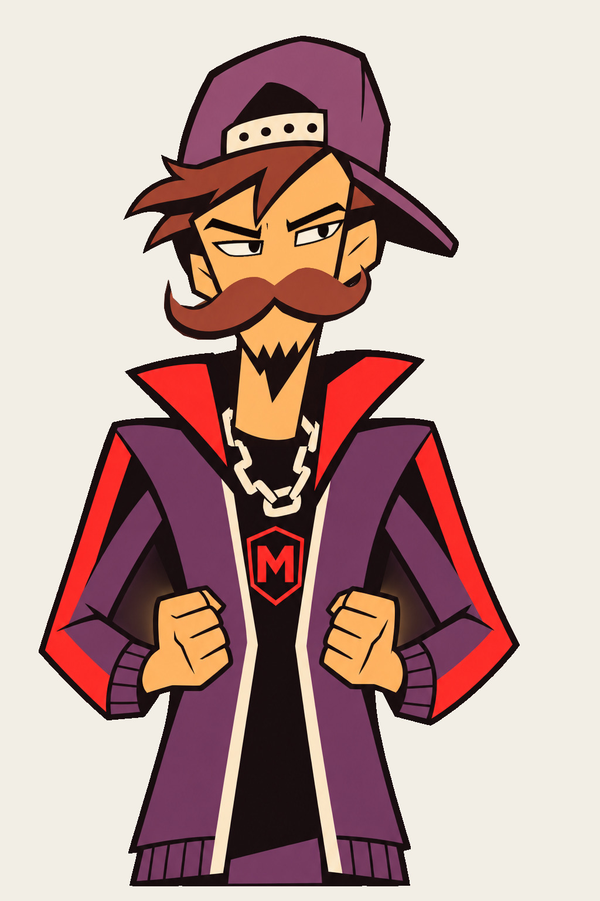
Bravo
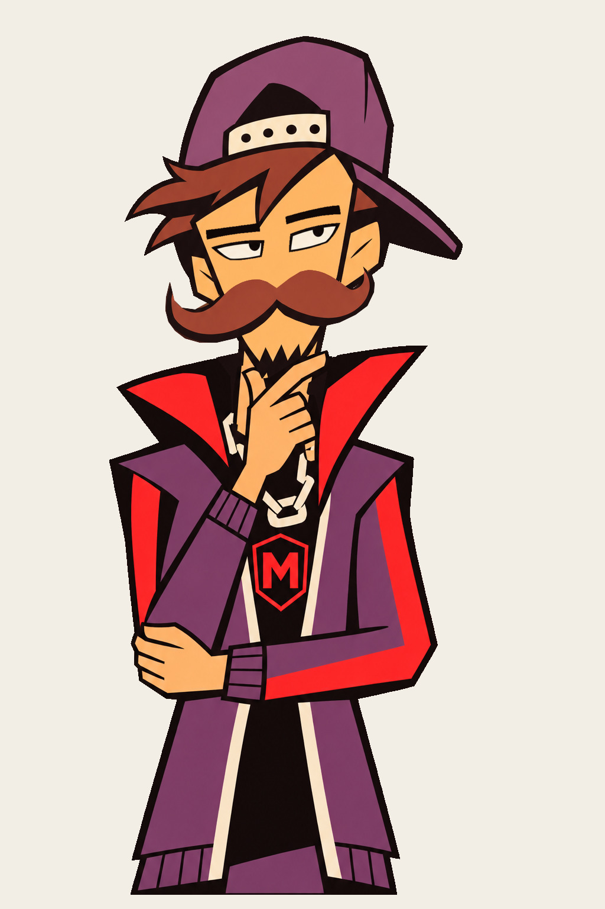
Pensando
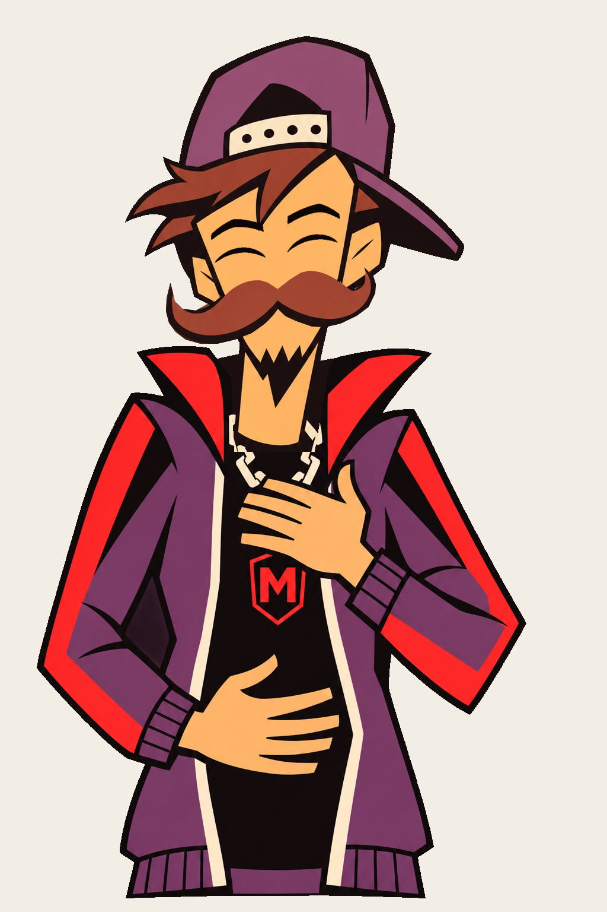
Rindo
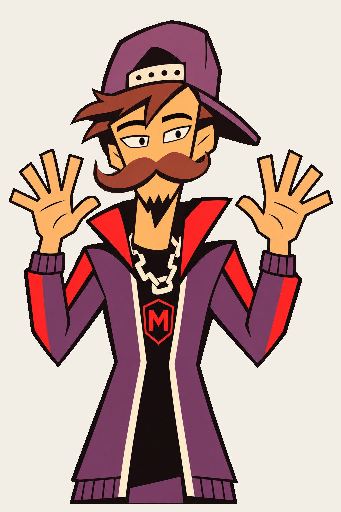
Assustado
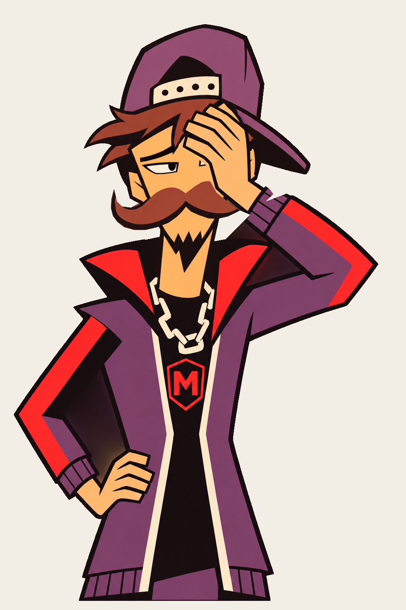
Facepalm
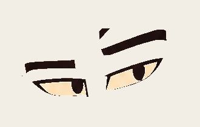
Normal do desenho aprovado
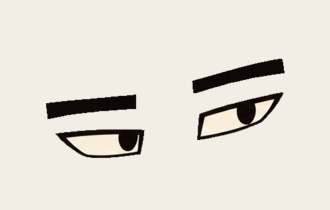
Normal alternativo
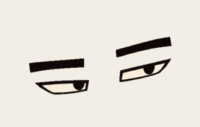
Piscada — meio fechado
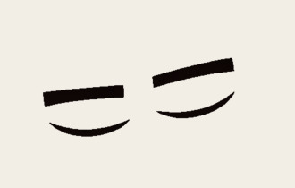
Piscada — fechado
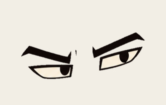
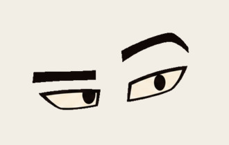
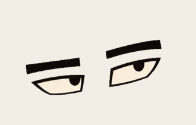
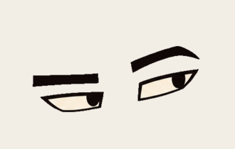
Desconfiado
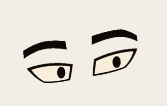
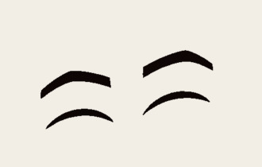
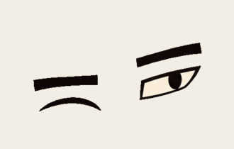
Piscando olho esquerdo
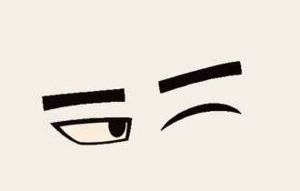
Piscando olho direito
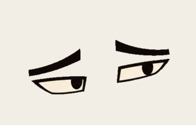
Preocupado
Repouso · Levantado · Comprimido · Ciclo demonstrativo